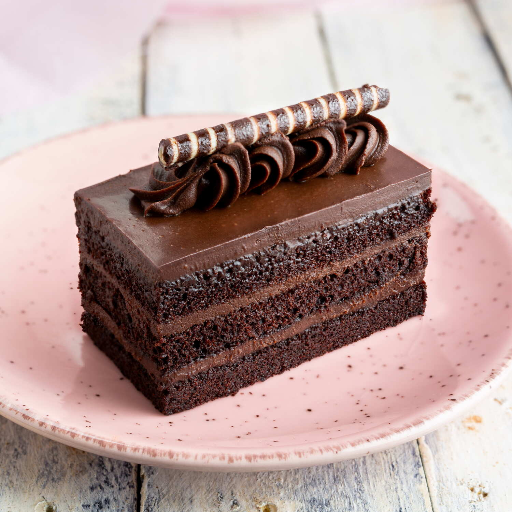

Food is any substance consumed to provide nutritional support for an organism. Food is usually of plant, animal or fungal origin, and contains essential nutrients, such as carbohydrates, fats, proteins, vitamins, or minerals.
 Pizza (Italian: [ˈpittsa], Neapolitan: [ˈpittsə]) is a savory dish of Italian origin consisting of a usually round, flattened base of leavened wheat-based dough topped with tomatoes, cheese, and often various other ingredients (such as anchovies, mushrooms, onions, olives, pineapple, meat, etc.), which is then baked at a high temperature, traditionally in a wood-fired oven.[1] A small pizza is sometimes called a pizzetta. A person who makes pizza is known as a pizzaiolo.
Pizza (Italian: [ˈpittsa], Neapolitan: [ˈpittsə]) is a savory dish of Italian origin consisting of a usually round, flattened base of leavened wheat-based dough topped with tomatoes, cheese, and often various other ingredients (such as anchovies, mushrooms, onions, olives, pineapple, meat, etc.), which is then baked at a high temperature, traditionally in a wood-fired oven.[1] A small pizza is sometimes called a pizzetta. A person who makes pizza is known as a pizzaiolo.
 Pastry refers to a variety of doughs, as well as the sweet and savoury baked goods made from them. These goods are often called pastries as a synecdoche, and the dough may be accordingly called pastry dough for clarity. Sweetened pastries are often described as bakers' confectionery